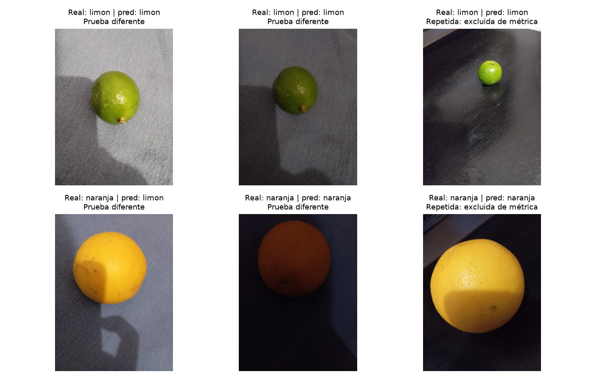

UNIDAD 1 / EVIDENCIA DE EJECUCIÓN2026-11-20T16:33:18.234187-06:00 · 4.40 s · EJECUTADO · código de salida 0
Comando ejecutado
python 08-talleres/05-vision-computadora/clasificar_frutas.py
Salida de la ejecución
Entrenamiento: 47 fotos; clases: fondo, limon, naranja.
Validación cruzada estratificada (3 pliegues): 93.75%. Fotos de la misma sesión: estimación orientativa.
Prueba_Limon_Fondo_Diferente.jpeg: pred=limon; real=limon; repetida=False
Prueba_Limon_No_Luz.jpeg: pred=limon; real=limon; repetida=False
Prueba_Limon_Original.jpeg: pred=limon; real=limon; repetida=True
Prueba_Naranja_Fondo_Diferente.jpeg: pred=limon; real=naranja; repetida=False
Prueba_Naranja_No_Luz.jpeg: pred=naranja; real=naranja; repetida=False
Prueba_Naranja_Original.jpeg: pred=naranja; real=naranja; repetida=True
Evaluación excluyendo fotos repetidas: 3/4 aciertos.
El cambio de luz/fondo puede degradar un clasificador basado en color.
Salida completa: 08-5-vision.txt · SHA-256 del código: 0d797c181a54c6ff9b36…

predicciones.png · archivo generado por la prácticaCaptura del reporte HTML construido a partir de la ejecución real. Consulta el código, el TXT y registro_ejecuciones.json para reproducirla.